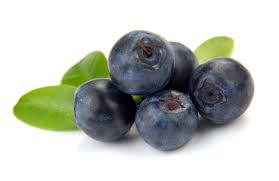

Ingredienser för blåbär:
- 1 L blåbär
- 1 dl socker
- 2 msk mjöl
Ingredienser för degen:
- 100 g smör
- 1/2 dl socker
- 2 dl mjöl
- Sätt ungen på 200°
- Blanda blåbär, mjöl och socker
- Smält smör och blanda det med socker och mjöl
- Lägg i blåbären i en pajform och degen på blåbären
- Sätt i ugnen i ca 20 minuter
